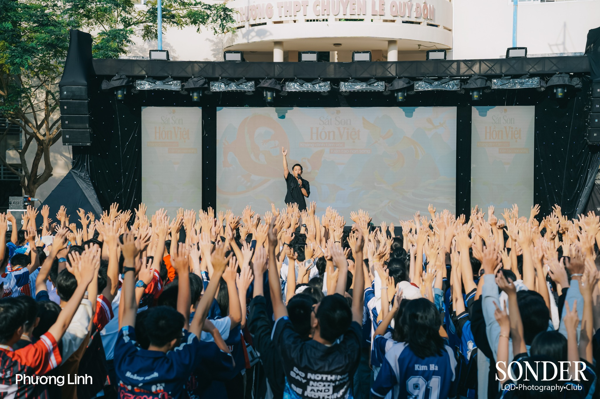

Giới thiệu chủ đề
“Uống nước nhớ nguồn” là truyền thống đạo lý tốt đẹp của dân tộc Việt Nam, thể hiện lòng biết ơn sâu sắc đối với những người đã tạo nên giá trị cho cuộc sống hôm nay.

Trong môi trường học đường, đạo lý ấy thể hiện rõ qua tình cảm, sự kính trọng và lòng biết ơn của học sinh đối với thầy cô giáo.
Báo tường điện tử này là sản phẩm của Nhóm 3, được thực hiện với mong muốn bày tỏ lòng tri ân chân thành đến các thầy cô.